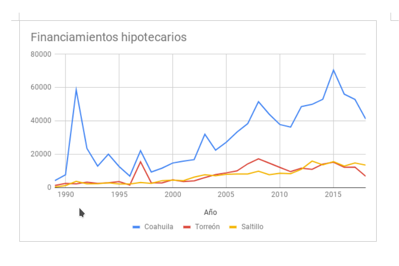

En el Índice de Precios de la Vivienda, y como se reporta en el Monitor de Vivienda del IMPLAN, el valor medio de las casa en Coahuila es de $425 mil pesos.
La Comisión Nacional Bancaria y de Valores reporta que para julio del 2018, existen poco más de 11 mil créditos hipotecarios en sus diversas modalidades en Torreón, mientras que la Comisión Nacional de Vivienda reporta que el total de financiamientos entre 2017 y 2018 asciende a 18,958 contando también otras instituciones que se dedican a otorgar este tipo de créditos como lo son el INFONAVIT, FOVISSSTE, FONHAPO, entre otros.
En la ciudad de Saltillo, la tendencia de aumento de financiamientos hipotecarios ha ido creciendo y despegándose de los números que se reportan en Torreón, ya que a partir del 2015, se han otorgado alrededor de 10 mil financiamientos más, con un crecimiento en el 2017 respecto al año anterior de 14.56%, mientras que para Torreón este fue casi nulo.
Financiamientos Hipotecarios
| Año | Coahuila | Torreón | Saltillo |
|---|---|---|---|
| 2015 | 70,514 | 15,149 | 15,502 |
| 2016 | 56,073 | 12,152 | 12,874 |
| 2017 | 52,864 | 12,216 | 14,749 |
| julio 2018 | 41,160 | 6,742 | 13,425 |
Fuente: Sistema Nacional de Información e Indicadores de Vivienda. Consultado el 20 de septiembre del 2018.
La mayoría de estos financiamientos se consideran por valor de la vivienda en Popular, que representan un 38.52% del total de los créditos, y Económico, que ascienden a 20.35% del total para julio del presente año, lo cual significa que conforme a los datos que presenta la Sociedad Hipotecaria Federal (SHF), el valor medio de mercado de la vivienda nueva de interés social a nivel estado asciende a poco menos de los $550 mil pesos, con 262 muestras, mientras que el valor medio de las casas clasificadas como media es de $839 mil pesos, conforme a una muestra de 61 avalúos reportados por las Unidades de Valuación.
En el Índice de Precios de la Vivienda, y como se reporta en el Monitor de Vivienda del IMPLAN, el valor medio de las casa en Coahuila es de $425 mil pesos.
Si se toman en cuenta los datos de ingresos promedios de la ENOE, para el segundo trimestre del 2018, que ascienden a $7,831 pesos mensuales, un Costo Anual Total para créditos hipotecarios reportado por Banxico para diciembre del 2017 de 13.13%, se puede estimar el índice de asequibilidad conforme a la metodología de la Asociación Nacional de Agentes de Bienes Raíces de Estados Unidos (NAR).
Esta metodología toma en cuenta la capacidad del comprador de casa de pagarla en base a dos supuestos: primero, que el gasto destinado a pagar la hipoteca sea no mayor al 25% de sus ingresos; y segundo, que el enganche de la propiedad sea del 20% efectivamente.
Con base a los supuestos anteriores, se estima el índice de asequibilidad como la relación entre el ingreso promedio de una familia con una sola percepción salarial, que en términos anuales equivale a casi $94 mil pesos, sobre el ingreso necesario para poder pagar la hipoteca, que tomando la media de $425 mil, es de $3,795.66 pesos mensuales con intereses o $182 mil anuales, lo cual nos da 51% como la asequibilidad de la vivienda.
Así, el ingreso promedio solo alcanza para pagar o adquirir el 51% del valor de la hipoteca de una casa promedio, siendo el óptimo un valor de 100%, en donde el ingreso promedio es suficiente para pagar el valor de la hipoteca y en valores mayores se refiere a que existe un excedente de ingreso respecto al costo del pago del principal e intereses. Adicionalmente se tiene que tomar en cuenta que la apreciación promedio de la vivienda para el 2017 fue de casi 6% en Torreón.
Por otro lado, el ingreso necesario para poder pagar la hipoteca promedio, o tener un índice de asequibilidad de 100%, se estima en $15 mil pesos, con lo cual se puede asignar el 25% del ingreso al pago y el resto para otros gastos.
Si bien este ingreso óptimo difiere mucho de lo estimado en la ENOE, cabe resaltar que se cuentan con mecanismos que ayudan al trabajador o a quien usa estos financiamientos a poder pagar la hipoteca. Es por ello que la mayoría de los financiamientos reportados por la CONAVI, se hacen a través del INFONAVIT, que en el 2017 representaban el 54% del total, cifra que se conserva para el 2018, con un ligero aumento en cuanto a los financiamientos directos de bancos que aumentaron 4% para representar el 24% del total para Torreón, siendo el tipo de financiamiento de crédito individual el de mayor uso.
Finalmente, el índice de asequibilidad de la vivienda no toma en cuenta la existencia de viviendas en dónde se cuenta con más de dos personas percibiendo ingreso, ni los ingresos adicionales, los cuales tienen un peso considerable en el país y la región, siendo la tasa de informalidad laboral del 40% y la tasa de ocupación informal del 23%, lo cual abre pauta a tener que considerar no solo el valor de las viviendas, sino también el valor de las rentas y otros mecanismos de acceso a financiamiento de personas que no cuentan con la formalidad o apoyos como lo tienen otros trabajadores.
Financiamientos Hipotecarios
